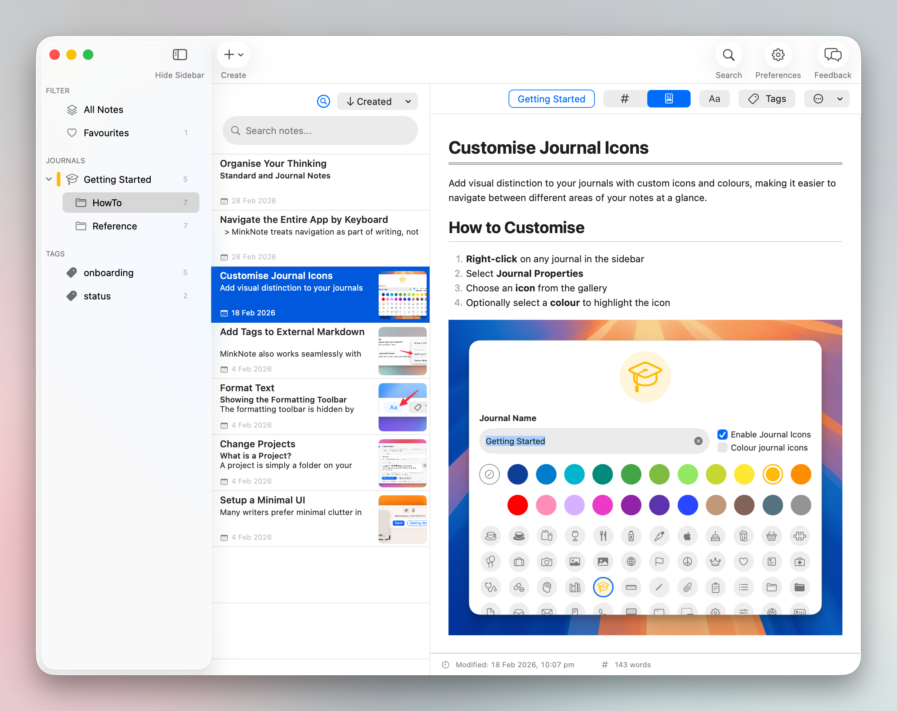

Native to macOS, private by default, and built on plain Markdown files. No databases, no lock-in, just your files.

Plain Markdown files live on your disk and in your iCloud. Readable by any app — today and in ten years. No proprietary formats, no exports, no surprises.
There is no server that holds your notes. No account required. No analytics on your writing. Your thoughts stay yours.
Instant launch. Global search. Keyboard-first navigation. MinkNote gets out of your way so you can focus on thinking.
Focused features, thoughtfully built for how macOS power users actually work.
Find any note in milliseconds. Full-text search with Spotlight integration baked in.
Every action has a shortcut. Navigate your entire knowledge base without lifting your hands.
Standard CommonMark with syntax highlighting, live preview, and zero vendor lock-in.
Your notes sync via iCloud — the same files you own, encrypted by Apple.
No internet required — ever. Your notes work on a plane, in a cabin, anywhere.
Organise with nested journals and multi-tags. Structure your way, not ours.